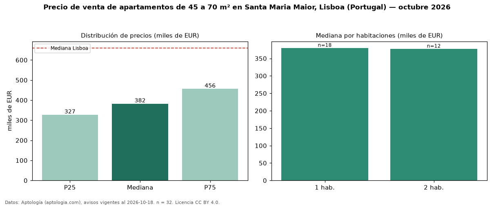

Precio de venta de apartamentos de 45 a 70 m² en Santa Maria Maior, Lisboa (Portugal) — octubre 2026
EUR 382.500 es el precio mediano de apartamentos de 45 a 70 m² en venta en Santa Maria Maior, Lisboa (Portugal) (n = 32 avisos). Eso es 33 % menos que la mediana de todos los apartamentos en venta de Santa Maria Maior (EUR 575.000, n = 120); este segmento reúne el 27 % de esos avisos. Por metro cuadrado, la mediana es EUR 6.691/m² (n = 32), 1 % por debajo del conjunto de referencia (EUR 6.779/m²). El área mediana anunciada es 56 m². El segmento con más oferta es el de 1 habitación (18 avisos, mediana EUR 380.000); pasar de 1 habitación a 2 habitaciones cambia la mediana −1 %. La mediana de todos los apartamentos en venta de Lisboa es EUR 660.000 (−42 % de diferencia). La mitad central de los avisos va de EUR 327.212 a EUR 456.250 (razón 1,4), una dispersión baja. Datos: Aptología (aptologia.com), CC BY 4.0 — https://www.aptologia.com/pt/venda/lisboa/santa-maria-maior. Archivos: PDF, CSV con las cifras y gráfica PNG.

| Avisos únicos | 32 |
|---|---|
| Percentil 25 | COP 327.212 |
| Mediana | COP 382.500 |
| Percentil 75 | COP 456.250 |
| Mediana por m² | COP 6.691 |
Fuente: avisos vigentes de portales inmobiliarios recopilados por Aptología, deduplicados (mínimo 30 avisos únicos por celda). Precios pedidos, no cerrados. Fecha: 2026-10-18.